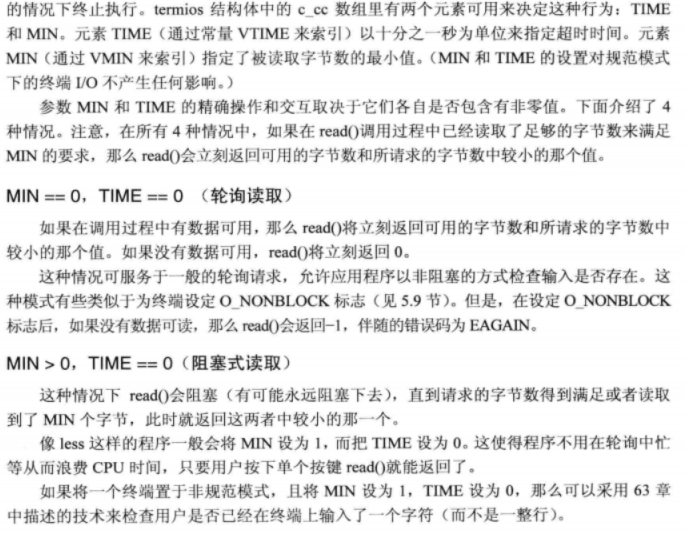
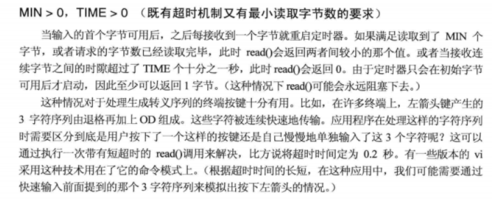

LINUX串口编程–raw
参考blog
[ linux-串口应用编程_邻居家的小南瓜的博客-CSDN博客](https://blog.csdn.net/qq_37932504/article/details/121125906?ops_request_misc=&request_id=&biz_id=102&utm_term=linux 串口api&utm_medium=distribute.pc_search_result.none-task-blog-2~all~sobaiduweb~default-4-121125906.142^v9^pc_search_result_control_group,157^v4^new_style&spm=1018.2226.3001.4187)
API总结
<termios.h>
/* Return the output baud rate stored in *TERMIOS_P. */
extern speed_t cfgetospeed (const struct termios *__termios_p) __THROW;
/* Return the input baud rate stored in *TERMIOS_P. */
extern speed_t cfgetispeed (const struct termios *__termios_p) __THROW;
/* Set the output baud rate stored in *TERMIOS_P to SPEED. */
extern int cfsetospeed (struct termios *__termios_p, speed_t __speed) __THROW;
/* Set the input baud rate stored in *TERMIOS_P to SPEED. */
extern int cfsetispeed (struct termios *__termios_p, speed_t __speed) __THROW;
#ifdef __USE_MISC
/* Set both the input and output baud rates in *TERMIOS_OP to SPEED. */
extern int cfsetspeed (struct termios *__termios_p, speed_t __speed) __THROW;
#endif
/* Put the state of FD into *TERMIOS_P. */
extern int tcgetattr (int __fd, struct termios *__termios_p) __THROW;
/* Set the state of FD to *TERMIOS_P.
Values for OPTIONAL_ACTIONS (TCSA*) are in <bits/termios.h>. */
extern int tcsetattr (int __fd, int __optional_actions,
const struct termios *__termios_p) __THROW;
#ifdef __USE_MISC
/* Set *TERMIOS_P to indicate raw mode. */
extern void cfmakeraw (struct termios *__termios_p) __THROW;
#endif
/* Send zero bits on FD. */
extern int tcsendbreak (int __fd, int __duration) __THROW;
/* Wait for pending output to be written on FD.
This function is a cancellation point and therefore not marked with
__THROW. */
extern int tcdrain (int __fd);
/* Flush pending data on FD.
Values for QUEUE_SELECTOR (TC{I,O,IO}FLUSH) are in <bits/termios.h>. */
extern int tcflush (int __fd, int __queue_selector) __THROW;
/* Suspend or restart transmission on FD.
Values for ACTION (TC[IO]{OFF,ON}) are in <bits/termios.h>. */
extern int tcflow (int __fd, int __action) __THROW;
#if defined __USE_XOPEN_EXTENDED || defined __USE_XOPEN2K8
/* Get process group ID for session leader for controlling terminal FD. */
extern __pid_t tcgetsid (int __fd) __THROW;
#endif
open()函数
功能：打开设备文件
返回值：如果操作成功，它将返回一个文件描述符，如果操作失败，它将返回-1
int open (const char *__path, int __oflag, ...)
note:flags = O_RDWR | O_NOCTTY | O_NDELAY | O_EXCL;（libmodbus代码截取）
O_RDWR ： 可读可写
O_NOCTTY ：该参数不会使打开的文件成为该进程的控制终端。如果没有指定这个标志，那么任何一个 输入都将会影响用户的进程。
O_NDELAY ：这个程序不关心DCD信号线所处的状态,端口的另一端是否激活或者停止。如果用户不指定了这个标志，则进程将会一直处在睡眠状态，直到DCD信号线被激活。
O_EXCL：原子操作，确保只有一个执行流使用这个设备文件
tcgetattr()函数
功能：获取终端的属性
返回值：返回值：调用成功时返回 0；失败将返回-1
#include <termios.h>
int tcgetattr(int fd, struct termios *termios_p);
tcsetattr()函数
功能：修改终端的属性
返回值：返回值：调用成功时返回 0；失败将返回-1
#include <termios.h>
int tcsetattr(int fd, int optional_actions,const struct termios *termios_p);
note：optional_actions–更改何时生效
TCSANOW 配置立即生效 TCSADRAIN 配置在所有写入 fd 的输出都传输完毕之后生效 TCSAFLUSH 所有已接收但未读取的输入都将在配置生效之前被丢弃
cfmakeraw()函数
功能：将终端配置为原始模式。
void cfmakeraw(struct termios *termios_p);
波特率设置
//获取输入输出波特率
extern speed_t cfgetospeed (const struct termios *__termios_p) __THROW;
extern speed_t cfgetispeed (const struct termios *__termios_p) __THROW;
//修改输入输出波特率
extern int cfsetospeed (struct termios *__termios_p, speed_t __speed) __THROW;
extern int cfsetispeed (struct termios *__termios_p, speed_t __speed) __THROW;
//同时修改输入输出波特率
extern int cfsetspeed (struct termios *__termios_p, speed_t __speed) __THROW;
tcdrain()函数
功能：调用 tcdrain()函数后会使得应用程序阻塞， 直到串口输出缓冲区中的数据全部发送完毕为止
返回值：调用成功时返回 0；失败将返回-1，
#include <termios.h>
int tcdrain(int fd);
tcflush()函数
功能：调用该函数会清空输入/输出缓冲区中的数据
返回值：返回值：调用成功时返回 0；失败将返回-1
#include <termios.h>
int tcflush(int fd, int queue_selector);
note:queue_selector
TCIFLUSH 对接收到而未被读取的数据进行清空处理 TCOFLUSH 对尚未传输成功的输出数据进行清空处理 TCIOFLUSH 对尚未处理的输入/输出数据进行清空处理
tcflow()函数
功能：调用 tcflow()函数会暂停数据传输或接收工作。
返回值：返回值：调用成功时返回 0；失败将返回-1。
#include <termios.h>
int tcflow(int fd, int action);
note: action
TCOOFF 暂停数据输出（输出传输） TCOON 重新启动暂停的输出 TCIOFF 发送 STOP 字符，停止终端设备向系统发送数据 TCION 发送一个 START 字符，启动终端设备向系统发送数据；
struct termios结构体
struct termios
{
tcflag_t c_iflag; /* input mode flags */
tcflag_t c_oflag; /* output mode flags */
tcflag_t c_cflag; /* control mode flags */
tcflag_t c_lflag; /* local mode flags */
cc_t c_line; /* line discipline */
cc_t c_cc[NCCS]; /* control characters */
speed_t c_ispeed; /* input speed */
speed_t c_ospeed; /* output speed */
};
波特率、数据位、停止位使用案例
/*0. 保存原有的termios*/
tcgetattr(this->fd, &old_termios);
/*1. 设置波特率 */
new_termios.c_cflag&=~CBAUD;//波特率掩码(000000010017 /* baud speed mask)
if(cfsetispeed(&(new_termios),baud_adapt(baudrate))<0)
{
std::cerr<<"[err]:function cfsetispeed()--set "<< baudrate<<" input baudrate failed!!!\n";
this->uart_close();
return -1;
}
if(cfsetospeed(&(new_termios),baud_adapt(baudrate))<0)
{
std::cerr<<"[err]:function cfsetospeed()--set "<< baudrate<<" output baudrate failed!!!\n";
this->uart_close();
return -1;
}
/* 2.设置数据位 */
new_termios.c_cflag&=~CSIZE;//屏蔽其他标志
switch (databits)//设置数据位
{
case 5:
new_termios.c_cflag|=CS5;
break;
case 6:
new_termios.c_cflag|=CS6;
break;
case 7:
new_termios.c_cflag|=CS7;
break;
case 8:
new_termios.c_cflag|=CS8;
break;
default:
this->uart_close();
std::cerr<<"[err]:set databits failed!!!\n";
return -1;
break;
}
/*3. 设置奇偶检验 */
switch (parity)
{
case 'N'://无
new_termios.c_iflag &= ~(INPCK | ISTRIP);//关闭输入奇偶检验检查
new_termios.c_cflag &= ~PARENB;//关闭奇偶位
break;
case 'E'://奇
new_termios.c_iflag |= (INPCK );//开启输入奇偶检验检查
new_termios.c_cflag |= PARENB;//开启奇偶位
new_termios.c_cflag &= ~PARODD;//关闭偶位
break;
case 'O'://偶
new_termios.c_iflag |= (INPCK);//开启输入奇偶检验检查
new_termios.c_cflag|= PARENB;//开启奇偶位
new_termios.c_cflag |= PARODD;//开启偶位
break;
default:
this->uart_close();
std::cerr<<"[err]:set parity failed!!!\n";
return -1;
break;
}
/*4. 设置停止位 */
switch (stopbits)
{
case 1:
new_termios.c_cflag &= ~CSTOPB;
break;
case 2:
new_termios.c_cflag |= CSTOPB;//每个字符使用2bit停止位，否者就使用一个
break;
default:
this->uart_close();
break;
}
/*5. 设置非规范模式(即raw模式)，也可以使用cfmakeraw()函数*/
new_termios.c_lflag &= ~(ICANON | ECHO | ECHOE | ISIG);
new_termios.c_oflag &=~ OPOST; /* Raw output */
new_termios.c_cc[VMIN]=0;
new_termios.c_cc[VTIME]=1;
/*6.other*/
new_termios.c_oflag &= ~OPOST; /* Raw output */
new_termios.c_iflag &= ~(IXON | IXOFF | IXANY); /* Software flow control is disabled */
new_termios.c_iflag &= ~(IUCLC|ICRNL|INLCR|IGNCR);/* 1.关闭input大小写转换 2.禁止CR、LF相互转换 3.不忽略CR、LF*/
new_termios.c_oflag &= ~(OLCUC|OCRNL|ONLCR);/* 1.关闭output大小写转换 2.同上*/
/*7.设置生效 */
if(tcsetattr(this->fd,TCSANOW,&(new_termios))<0)
{
std::cerr<<"[err]:function tcsetattr()--set attr failed!!!\n";
this->uart_close();
return -1;
}
非规范模式：C_CC[]–MIN TIME



代码及其测试
代码
[代码案例 click here](code/02c/uart at main · Getonechao/code (github.com))
测试
%写
clear;
device=serialport("COM5",115200,"Parity","even","DataBits",8,"StopBits",1);
flush(device);
for i=1:10
write(device,[0:255],"uint8");
end
%读
clear;
device=serialport("COM5",115200,"Parity","even","DataBits",8,"StopBits",1);
flush(device);
ret=read(device,3,"uint8")